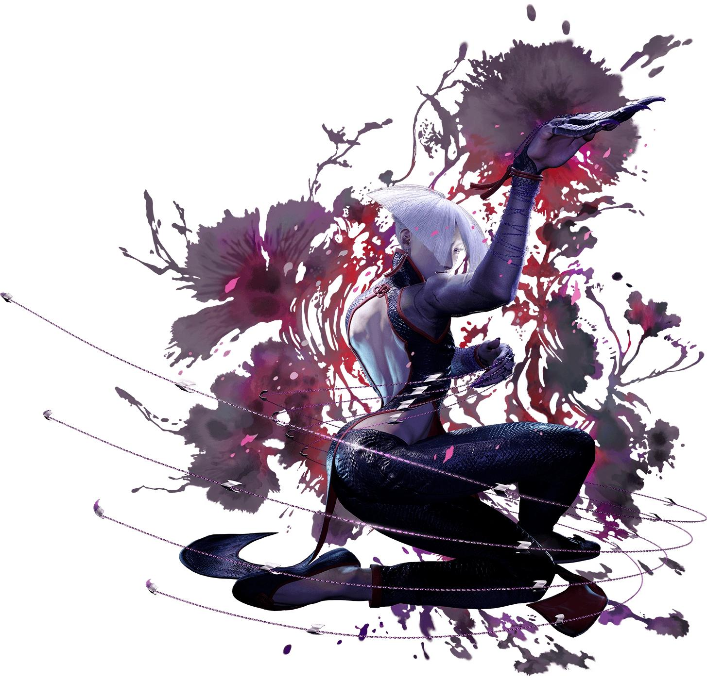
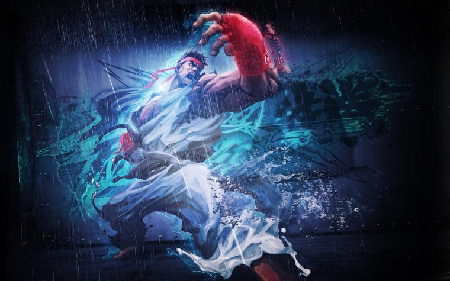
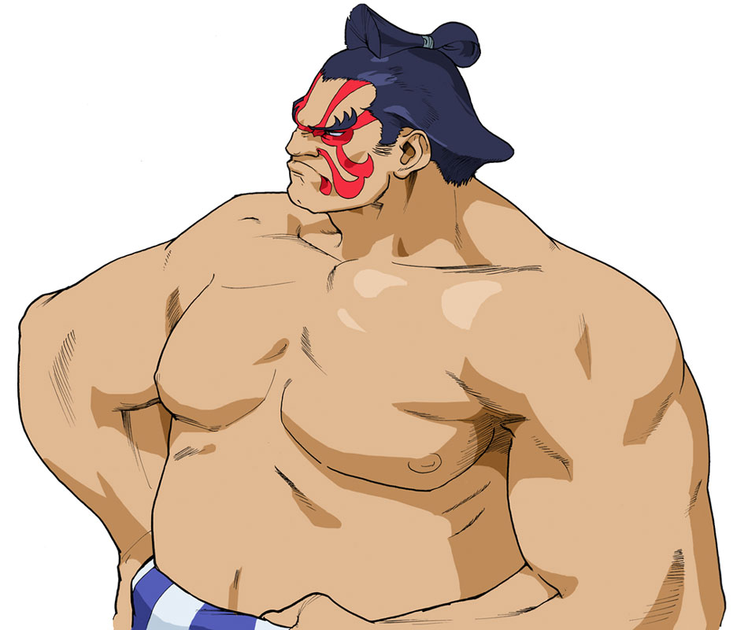
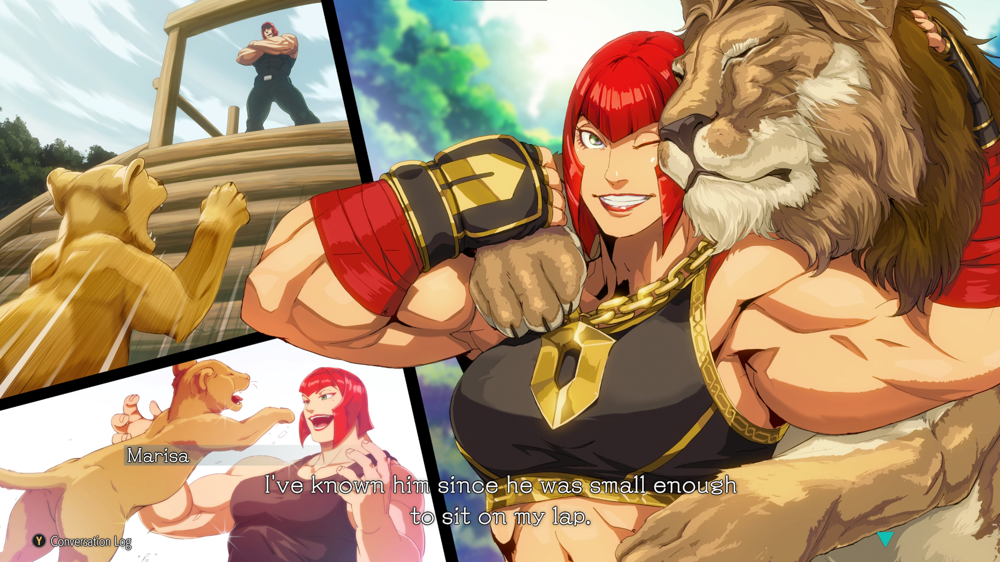
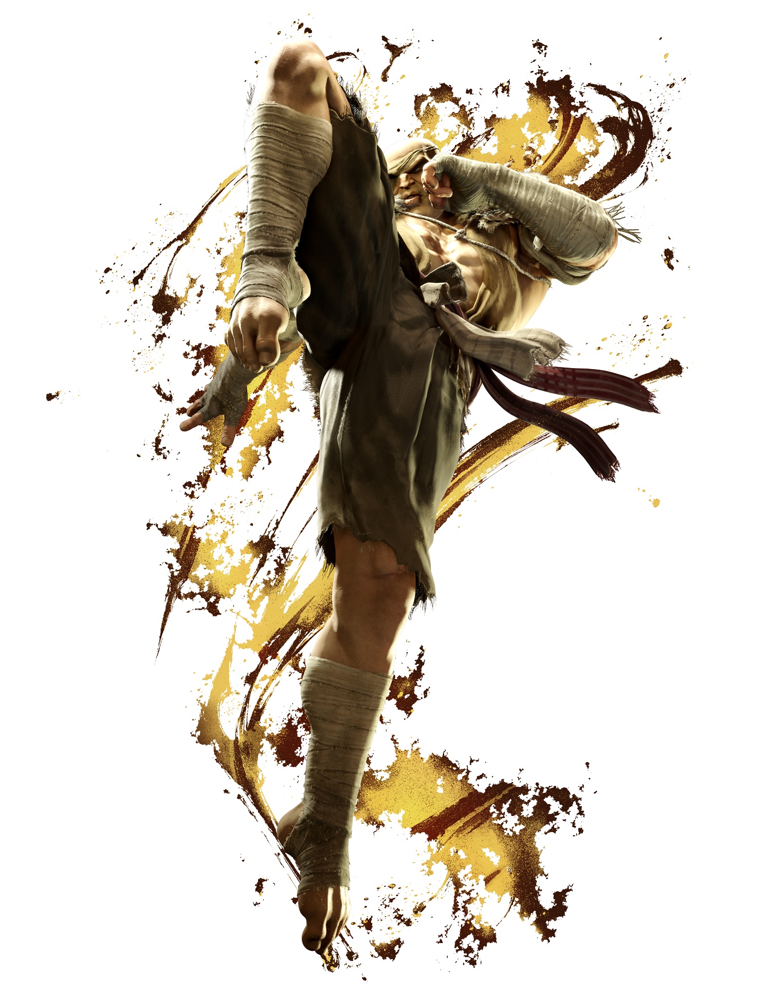
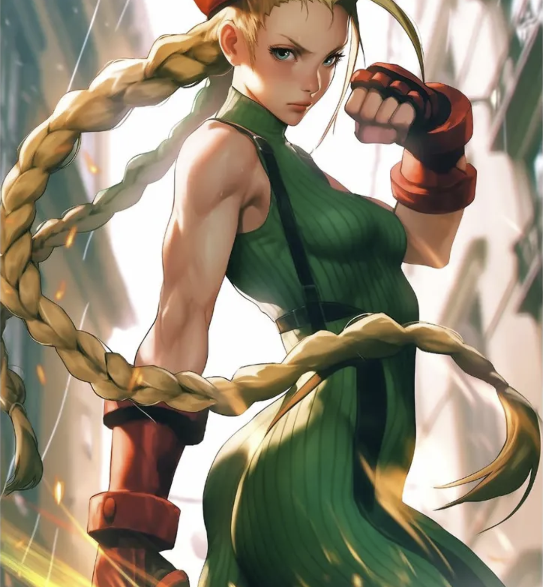
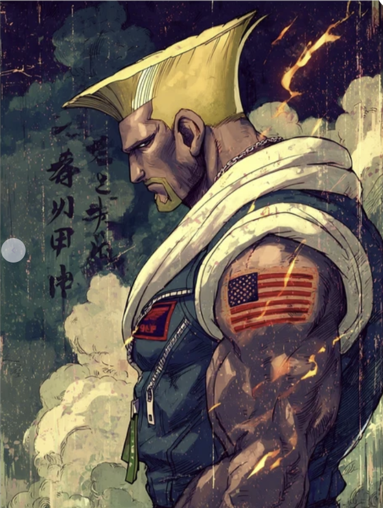
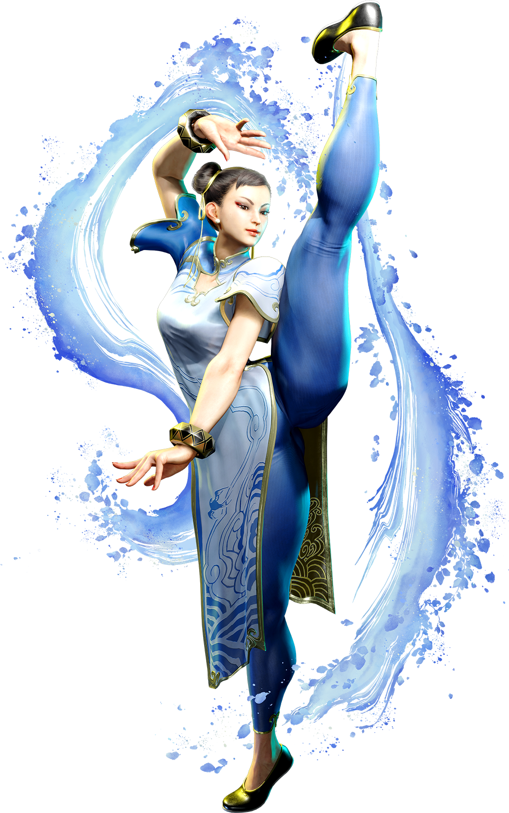
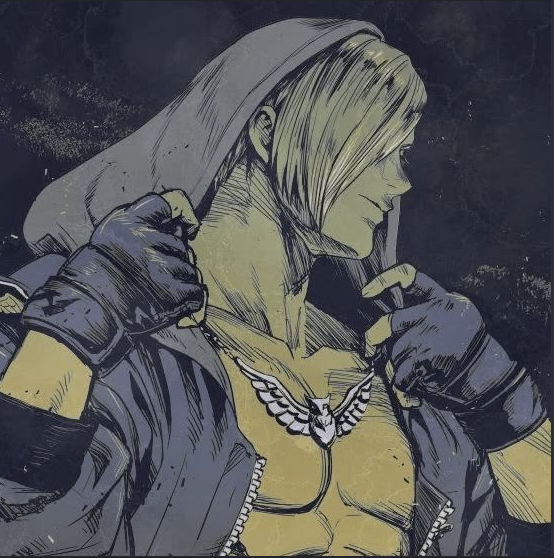

OMNII LEGACY / FIGHTING GAMES
STREET
FIGHTER 6.
My fighters. My matches. My climb. A personal showcase of the World Warriors I love to play — and the road to Master Rank.
CAREER MILESTONE / FIRST MASTER
The Master Rank Spotlight
ACHIEVEMENT UNLOCKED
A.K.I.
My first and currently only fighter to reach Master Rank in Street Fighter 6. A milestone worth celebrating — and the centerpiece of my SF6 journey.
RANK: MASTER ★

MASTER
CHARACTER SELECT / PERSONAL FAVORITES
My Fighter Roster
Nine characters in my rotation. A.K.I. holds the Master crown; the others are favorites I enjoy playing. More ranks and highlights to come.

Ryu
World Warrior
E. Honda
World Warrior
Marisa
World Warrior
Sagat
World Warrior
Cammy
World Warrior
Guile
World Warrior
Chun-Li
World Warrior
Ed
World WarriorTHE JOURNEY CONTINUES
Next Round.
The road doesn't end at Master. This page will grow with new ranks, favorite matchups, combo discoveries, gameplay screenshots, and future milestones.